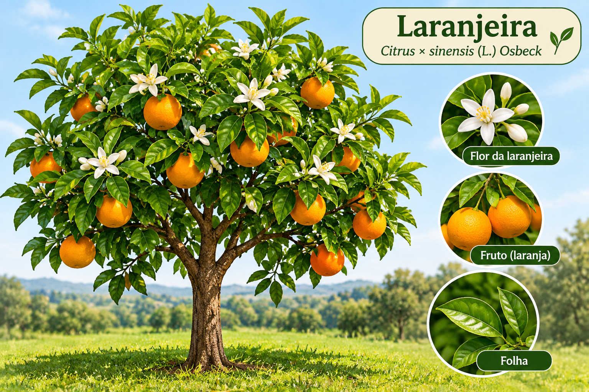

🌿 Identificação botânica
Nome popular: Laranjeira
Nome científico: Citrus × sinensis (L.) Osbeck
Família: Rutaceae
Tipo: Árvore frutífera

Imagem ilustrativa da laranjeira
🌳 Características
A laranjeira é uma árvore de folhas verdes persistentes, flores brancas e perfumadas e frutos suculentos. É cultivada em diversas regiões do Brasil.
🌸 Floração e frutificação
Floração: geralmente na primavera.
Colheita: varia conforme a variedade, o clima e o manejo, podendo ocorrer em diferentes épocas do ano em Santa Catarina.
🐝 Importância ambiental
Suas flores oferecem recursos para abelhas e outros polinizadores. Seus frutos também podem servir de alimento para animais.
❤️ Padrinho ou patrocinador
Nome: a identificar.
Esta árvore representa um gesto de carinho, generosidade e compromisso com as futuras gerações.
🙏 Uma mensagem ao peregrino
Assim como uma árvore precisa de cuidado para florescer e dar frutos, a vida também se fortalece com fé, esperança e pequenos gestos de amor.